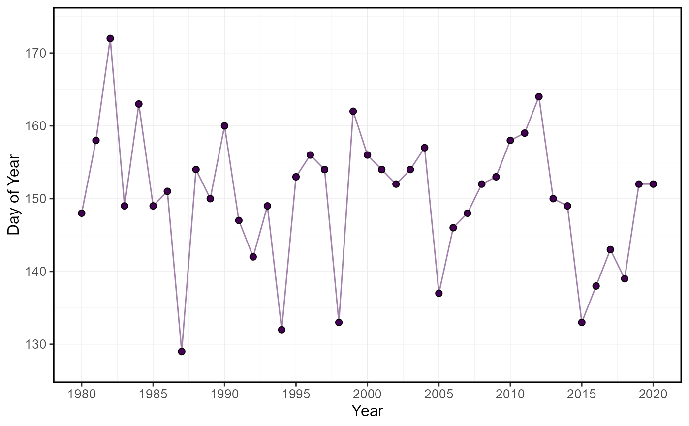

Plots annual the timing (day of year) of occurrence of portions of total annual flow of daily flow values from a streamflow dataset. Calculates the statistics from all daily discharge values from all years, unless specified. Data calculated using calc_annual_flow_timing() function.
plot_annual_flow_timing( data, dates = Date, values = Value, groups = STATION_NUMBER, station_number, percent_total = c(25, 33.3, 50, 75), water_year_start = 1, start_year, end_year, exclude_years, include_title = FALSE )
| data | A data frame of daily data that contains columns of dates, flow values, and (optional) groups (e.g. station numbers).
Leave blank if using |
|---|---|
| dates | Column in |
| values | Column in |
| groups | Column in |
| station_number | A character string vector of seven digit Water Survey of Canada station numbers (e.g. |
| percent_total | Numeric vector of percents of total annual flows to determine dates. Default |
| water_year_start | Numeric value indicating the month of the start of the water year for analysis. Default |
| start_year | Numeric value of the first year to consider for analysis. Leave blank to use the first year of the source data. |
| end_year | Numeric value of the last year to consider for analysis. Leave blank to use the last year of the source data. |
| exclude_years | Numeric vector of years to exclude from analysis. Leave blank to include all years. |
| include_title | Logical value to indicate adding the group/station number to the plot, if provided. Default |
A list of ggplot2 objects with the following for each station provided:
a plot that contains each n-percent of total volumetric discharge
day of year of 25-percent of total volumetric discharge
day of year of 33.3-percent of total volumetric discharge
day of year of 50-percent of total volumetric discharge
day of year of 75-percent of total volumetric discharge
Barnett, T.P., Pierce, D.W., Hidalgo, H.G., Bonfils, C., Santer, B.D., Das, T., Bala, G., Wood, A.W., Nozawa, T., Mirin, A.A., Cayan, D.R., Dettinger, M.D., 2008. Human-Induced Clanges in the Hydrology of the Western United States. Science 319, 1080-1083.
# Run if HYDAT database has been downloaded (using tidyhydat::download_hydat()) if (file.exists(tidyhydat::hy_downloaded_db())) { # Plot annual flow timing statistics with default percent totals plot_annual_flow_timing(station_number = "08NM116") # Plot annual flow timing with custom percent totals plot_annual_flow_timing(station_number = "08NM116", percent_total = 50) }#> Warning: One or more calculations included missing values and NA's were produced. Filter data for complete years or months, or use to ignore_missing = TRUE to ignore missing values.#> Warning: One or more calculations included missing values and NA's were produced. Filter data for complete years or months, or use to ignore_missing = TRUE to ignore missing values.#> $Annual_Flow_Timing#>